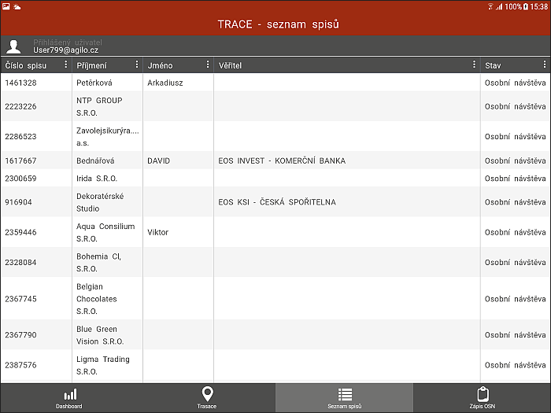

Seznam spisů
V této části programu jsou naimportované všechny spisy patřící přihlášenému inspektorovi. V základní tabulce je pět polí a nad každým lze data Třídit a Filtrovat, nebo v případě potřeby jde i Skrývat/Zobrazovat sloupce.

Kliknutím na spis se objeví seznam podzáložek s detailními informacemi.